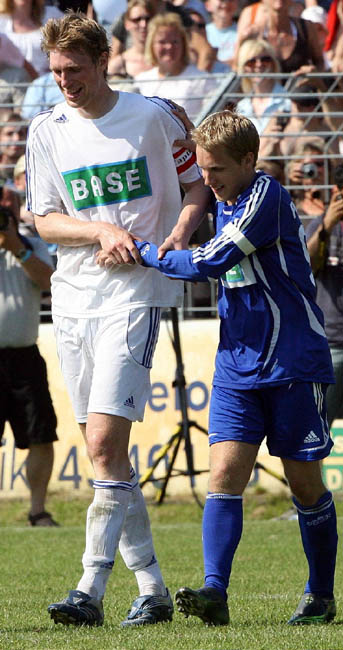
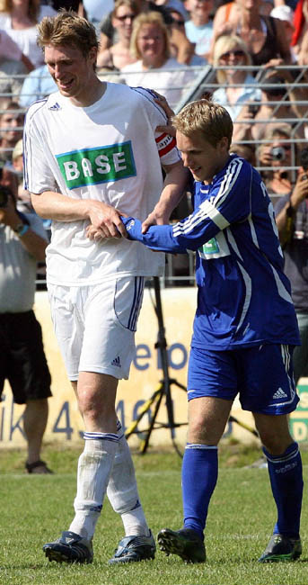

2007년 06월 전체 글 목록 |
2007/06/13 2007-06-10, 팀 보로프스키 인터뷰, 키커
2007/06/13 2007-06-09, Benefiz-Spiel : „Mertesacker & Friends“ vs. „Oliver Pocher Allstars“ (2)
2007/06/11 [Deutschland. Ein Sommermärchen] 기사 하나
2007/06/11 2007-06-09, Benefiz-Spiel : „Mertesacker & Friends“ vs. „Oliver Pocher Allstars“
2007/06/08 2007-06-06 유로 2008 예선 독일 vs. 슬로바키아
2007/06/13 2007-06-09, Benefiz-Spiel : „Mertesacker & Friends“ vs. „Oliver Pocher Allstars“ (2)
2007/06/11 [Deutschland. Ein Sommermärchen] 기사 하나
2007/06/11 2007-06-09, Benefiz-Spiel : „Mertesacker & Friends“ vs. „Oliver Pocher Allstars“
2007/06/08 2007-06-06 유로 2008 예선 독일 vs. 슬로바키아
키커가 월요일, 목요일에 나오니 오프라인판으로는 6월 11일자에 실렸을 것으로 추측.
키커 온라인 사이트에서는 헤드라인밖에 볼 수 없지만 브레멘 포럼에 누가 전문을 올려놓았다.
+ http://www.kicker.de/abo-shop/artikel/366723/
+ http://forum.werder.de/viewtopic.php?t=15193&postdays=0&postorder=asc&start=4140
+ 인터뷰의 극히 일부일뿐인 클로제 얘기만 가지고 쓴 영어 기사 http://sports.yahoo.com/sow/news?slug=afp-fblgerbremenbayern&prov=afp&type=lgns
[독일어 전문 보기]
[닫기]
[영어 기사 보기]
[닫기]
번역기 돌리고 영어 기사 읽은 결과:
- 부상이 회복되지 않아 메르테사커의 기금 모금 경기에는 결국 뛸 수 없었지만 참석하는 것만으로도 의미가 있었다.
- 여름 휴가는 5일 정도지만 아내가 만삭이라 독일에 머물 것이다.
- 7월 2일 시작되는 팀 훈련에 참가하는 것이 우선 목표.
- 지난 시즌 부상에 시달렸지만 그것이 월드컵 때문은 아니다.
- 국가 대표팀 얘기가 있는데 이 부분은 도무지 번역이 안 됨 -_-;
- 바이에른 뮌헨을 두려워하지 않는다.
- 브레멘이 다시 타이틀을 따낼 때가 되었다.
- 클로제가 지금 팀에서 행복하지 않고 떠나고 싶어 한다면 가야겠지만, 축구적인 관점에서 봤을 때, 현재 CL에 나가지 못하는 뮌헨으로 이적하는 것은 별로 말이 안 된다. 클로제는 해외로 나가고 싶어한다고 늘 생각했었다.
키커 온라인 사이트에서는 헤드라인밖에 볼 수 없지만 브레멘 포럼에 누가 전문을 올려놓았다.
+ http://www.kicker.de/abo-shop/artikel/366723/
+ http://forum.werder.de/viewtopic.php?t=15193&postdays=0&postorder=asc&start=4140
+ 인터뷰의 극히 일부일뿐인 클로제 얘기만 가지고 쓴 영어 기사 http://sports.yahoo.com/sow/news?slug=afp-fblgerbremenbayern&prov=afp&type=lgns
[독일어 전문 보기]
Borowski: "Es wird: Zeit, dass Werder einen Titel holt"
kicker: Sie waren zu Gast beim Benefiz-Spiel ihres Kollegen Per Mertesacker in Hannover. Selbst bei diesem Juxspiel konnten Sie noch nicht mitwirken. Wie sehr hat es Sie gewurmt, Tim Borowski?
Tim Borowski: Die Anfrage kam schon vor Wochen. Da habe ich natürlich zugesagt. Und ich hatte gehofft, dass ich spielen könnte. Aber das Risiko, sich erneut zu verletzen, war doch zu groß. So war ich nur auf der Bank dabei. Doch manchmal zählt auch Anwesenheit – gerade für einen guten Zweck.
kicker: Sie planten Ihr Comeback noch in der abgelaufenen Saison. Warum hat es nicht funktioniert?
Borowski: Manchmal spielen kleine Dinge eine wichtige Rolle. Es hat an Kleinigkeiten gehakt. Es brauchte halt noch seine Zeit. Die habe ich mir dann nehmen müssen, um die Sache richtig auszukurieren.
kicker: Sind Sie zur neuen Saison wieder fit?
Borowski: Ich hoffe es. Ich werde mich nun auf den Fitness-Zustand bringen, den ich bisher leider nicht erreichen konnte.
kicker: Also fällt der Urlaub aus?
Borowski: So könnte man es sehen. Ich mache nur kurz Pause, fünf Tage lang. Wir bleiben in Deutschland, auch wegen der Schwangerschaft meiner Frau.
kicker: Wie sieht Ihr Plan aus?
Borowski: Bis letzten Donnerstag habe ich noch ein Reha-Programm absolviert. Teilweise bei der Nationalelf, mit Klaus Eder und Oliver Schmidtlein. Das hat mir viel gebracht. Ich werde noch mal für gut zwei Wochen nach Donaustauf zu Klaus Eder fahren.
kicker: Und beim Werder-Start am 2. Juli sind Sie dabei?
Borowski: Das ist mein Ziel. Ich mache meine spezielle Vorbereitung vor der Vorbereitung im Klub.
kicker: Fühlen Sie sich als Opfer der Weltmeisterschaft?
Borowski: Nein, meine Knieverletzung hat mit der WM oder der Beanspruchung durch diese nichts zu tun. Im Fachjargon: Es ist eher eine Unfallverletzung.
kicker: Manche sprechen bei Ihnen von einem „Seuchenjahr“ gerade wegen der langwierigen Verletzungspause. Wie lauten Ihre Ziele für die neue Saison?
Borowski: Zunächst mal: Mein primäres Ziel ist es, wieder fit zu werden. Ich möchte verletzungsfrei bleiben, dann ergibt sich alles von selbst.
kicker: Trauern Sie Ihrer Form hinterher, die Sie in der WM-Saison gezeigt haben?
Borowski: Wenn ich wieder fit bin und regelmäßig spielen kann, habe ich keine Zweifel, an dieses hohe Niveau anzuknüpfen und mein Potenzial auszuschöpfen. Das habe ich schon gezeigt, als ich zwischenzeitlich mal gespielt habe.
kicker: Und Ihr Ziel in der Nationalelf?
Borowski: Ich glaube schon, dass Joachim Löw – gerade nach den vielen Ausfällen zuletzt – auch mich sehr vermisst hat. Ich will und werde natürlich wieder dabei sein. Mit der Nationalmannschaft müssen wir uns endgültig für die EM qualifizieren, das kein Problem sein dürfte.
kicker: In Ihrer Abwesenheit machten andere Boden gut, beispielsweise die Stuttgarter Hitzlsperger und Hilbert. Wie sehen Sie Ihren Stellenwert?
Borowski: Es freut mich für die Stuttgarter, dass sie Meister geworden sind. Daran hatten beide gewiss großen Anteil. Ich habe immer gesagt, dass wir in der deutschen Nationalelf ein gutes Mittelfeld haben. Ich fühle mich bestätigt. Und dass Konkurrenzkampf, dem ich mich gerne stelle, in allen Mannschaftsteilen gut ist, brauche ich nicht eigens zu betonen.
kicker: Bayern rüstet auf, Bremen hat bisher nur einen Reservetorwart geholt. Was sagen Sie zu den unterschiedlichen Planungen?
Borowski: Dass die Münchner so handeln, war klar nach der missratenen Saison. Wenn täglich über das Festgeldkonto in Höhe von 100 Millionen Euro gesprochen und geschrieben wird und es passiert nichts, dann ist nun der Zeitpunkt gekommen zu agieren.
kicker: Haben Sie Angst vor den übermächtigen Bayern?
Borowski: Natürlich nicht. Fraglos sind die Neuen gut, Weltklasse, wie Toni und Ribery, doch ob sich damit quasi von selbst alle Wünsche erfüllen, bleibt fraglich. Franz Beckenbauer hat es gut formuliert: Ob der Erfolg auf Anhieb eintritt? Die neue Elf braucht ihre Zeit, muss sich erst finden.
kicker: Beeinflusst die Bayern-Offensive die Zielstellung bei Werder Bremen?
Borowski: Nein, Bremen hat lange Zeit nichts mehr gewonnen. Es wird Zeit, dass wir mal wieder einen Titel holen.
kicker: Reizthema Klose: Wie sehen Sie den Poker?
Borowski: Eine schwierige Situation, wenn sich Miro hier nicht mehr wohlfühlt und weg will. Verschenken darf man ihn nicht. Doch wenn das Angebot der Bayern stimmt, muss man ihn schweren Herzens ziehen lassen.
kicker: Verstehen Sie Kloses Pläne?
Borowski: Aus sportlichen Gründen macht ein Wechsel zu den Bayern keinen Sinn, weil er dort nicht mal in der Champions League spielt. Ich habe immer gedacht, er will ins Ausland. Und wenn es keine Offerten gibt, dann bleibt er bei uns.
INTERVIEW: HANS-GÜNTER KLEMM
[닫기]
[영어 기사 보기]
Borowski also hints at Klose's Bremen departure
by Ryland James
June 11, 2007
BREMEN , Germany (AFP) - German midfielder Tim Borowski on Monday became the latest Werder Bremen player to suggest Miroslav Klose's future lies elsewhere as Bayern Munich chase the World Cup hot-shot.
Klose's Bremen team-mate Borowski, who won the last of his 29 caps in the 3-1 win over Switzerland last March, told German sports magazine Kicker that Klose's departure to Bayern should be allowed if the player wants to go.
The top-scorer at last year's World Cup, Klose has already said he will sign for Bayern when his contract expires in June 2008, but after Bremen midfielder Torsten Frings recently said Klose should go, Borowski is the latest team-mate to speak out.
"It's a difficult situation if Miro isn't happy to stay here and wants to leave," said Borowski after it emerged on Sunday that Bayern have made Bremen an offer for the vastly experienced striker.
"He can't just be given away, but if the Bayern offer is right, he should be allowed to leave."
Bayern have splashed out this summer for French midfielder Franck Ribery and Italian striker Luca Toni, but have failed to qualify for the Champions League next season and Borowski says a switch to Bayern would make no sense for Klose.
"From a football point of view, a switch to Bayern doesn't make much sense because he'll miss out on playing in the Champions League," said Borowski, with Bremen qualifying for the Champions League after finishing third in the Bundesliga.
"I have always thought he wants to move abroad."
Bayern have tabled a multi-million euro bid for Klose, who is also being chased by French side Lyon, and his sale would be good business for the north German club who will make nothing if he leaves when his contract expires next June.
But Bremen manager Klaus Allofs inisted on Monday, Klose is still part of their plans for next season.
"Klose will play a central role in our planning for next season," said Allofs, who added there has been no dialogue with Bayern for a fortnight.
But Bayern chairman Karl-Heinz Rummenigge was quoted in Tuesday's edition of the Munich Mercury as saying Klose should be allowed to join them, but Bremen's suggestion of a swap for Bayern's Lukas Podolski - voted the best young player of last year's World Cup - has been rejected.
"The fact is Miro wants to come to us. I think he will come to Bayern towards the end of the summer," said Rummenigge.
"The Bremen management wanted an exchange with Podolski, but we have rejected this."
[닫기]
번역기 돌리고 영어 기사 읽은 결과:
- 부상이 회복되지 않아 메르테사커의 기금 모금 경기에는 결국 뛸 수 없었지만 참석하는 것만으로도 의미가 있었다.
- 여름 휴가는 5일 정도지만 아내가 만삭이라 독일에 머물 것이다.
- 7월 2일 시작되는 팀 훈련에 참가하는 것이 우선 목표.
- 지난 시즌 부상에 시달렸지만 그것이 월드컵 때문은 아니다.
- 국가 대표팀 얘기가 있는데 이 부분은 도무지 번역이 안 됨 -_-;
- 바이에른 뮌헨을 두려워하지 않는다.
- 브레멘이 다시 타이틀을 따낼 때가 되었다.
- 클로제가 지금 팀에서 행복하지 않고 떠나고 싶어 한다면 가야겠지만, 축구적인 관점에서 봤을 때, 현재 CL에 나가지 못하는 뮌헨으로 이적하는 것은 별로 말이 안 된다. 클로제는 해외로 나가고 싶어한다고 늘 생각했었다.
# by 기린 | 2007/06/13 17:13 | Pastime
http://werder.egloos.com/298213 에 이어서.
메르테사커 공식 사이트에 소식과 사진이 업데이트되었더라.
http://www.per-mertesacker.de/?121A0A5720
http://www.per-mertesacker.de/?216A0
사진을 보니 메르테가 전에는 소년이었는데 이젠 청년이 되어가고 있다.
메르테사커 공식 사이트에 소식과 사진이 업데이트되었더라.
http://www.per-mertesacker.de/?121A0A5720
http://www.per-mertesacker.de/?216A0
사진을 보니 메르테가 전에는 소년이었는데 이젠 청년이 되어가고 있다.
# by 기린 | 2007/06/13 12:56 | Pastime
2006년 월드컵 1주년을 맞아 이런 저런 기사들이 올라오고 있는데, 검색하다가 우연히 걸린 기사.
http://www.tagesspiegel.de/sport/;art272,2317733
전문 백업 : im_kino_gewonnen.rtf
질문/답변 형식으로 되어 있는데, 번역기로는 의미 파악이 완전히 안 되는 와중에 그래도 흥미로운 몇 가지.
- 포돌스키가 침대에 있을 때 등장하는 건 무슨 봉지였나? Eine leere Packung Paprika Classic mit Peperoni-Würzung.
- 최종 흥행 성적은? Vier Millionen Zuschauer sahen den Film im Kino, elf Millionen im Fernsehen. Da kam eine Menge Geld zusammen. Die Nationalspieler hatten auf Gagen verzichtet, weil der Erlös an die SOS-Kinderdörfer gespendet werden sollte. Am Rande des Länderspiels gegen die Slowakei war dann endlich Zahltag, ein großformatiger Scheck über drei Millionen Euro wurde an die Kinderdörfer übergeben. Eine Million soll nachgereicht werden.
- 올리버 칸은 이 영화를 보고 뭐라고 했나? Kahn hat sich den Film bislang noch nicht komplett angeschaut: „Nur in Ausschnitten. Mir diesen Weg noch einmal aus der Perspektive des Zuschauers anzusehen, brauche ich momentan nicht!“
- 속편이 나올까? Ist noch nicht entschieden. Stellt sich die Frage, ob bei einer Europameisterschaft im Nachbarland noch einmal eine solche Stimmung aufkommt.
http://www.tagesspiegel.de/sport/;art272,2317733
전문 백업 : im_kino_gewonnen.rtf
질문/답변 형식으로 되어 있는데, 번역기로는 의미 파악이 완전히 안 되는 와중에 그래도 흥미로운 몇 가지.
- 포돌스키가 침대에 있을 때 등장하는 건 무슨 봉지였나? Eine leere Packung Paprika Classic mit Peperoni-Würzung.
- 최종 흥행 성적은? Vier Millionen Zuschauer sahen den Film im Kino, elf Millionen im Fernsehen. Da kam eine Menge Geld zusammen. Die Nationalspieler hatten auf Gagen verzichtet, weil der Erlös an die SOS-Kinderdörfer gespendet werden sollte. Am Rande des Länderspiels gegen die Slowakei war dann endlich Zahltag, ein großformatiger Scheck über drei Millionen Euro wurde an die Kinderdörfer übergeben. Eine Million soll nachgereicht werden.
- 올리버 칸은 이 영화를 보고 뭐라고 했나? Kahn hat sich den Film bislang noch nicht komplett angeschaut: „Nur in Ausschnitten. Mir diesen Weg noch einmal aus der Perspektive des Zuschauers anzusehen, brauche ich momentan nicht!“
- 속편이 나올까? Ist noch nicht entschieden. Stellt sich die Frage, ob bei einer Europameisterschaft im Nachbarland noch einmal eine solche Stimmung aufkommt.
# by 기린 | 2007/06/11 18:53 | Pastime
+ http://www.per-mertesacker-stiftung.de/benefiz.html
Ort: Stadion SV Arminia Hannover, Bischofsholer Damm
Termin: Samstag, den 9. Juni 2007, Beginn: 15.30 Uhr
~ Mertesacker & Friends 팀에는 프리츠와 보로프스키가 있었다. 보로프스키는 실제로 뛰지는 못 했겠지만.
프리츠 인터뷰 중에 이따금 메르테사커, 보로프스키와 함께 점심 먹으러 간다는 말이 있는데, 셋이 친한가 보다.
괜히 내가 다 흐뭇 : )
+ 5월 중순 쯤이었나, 이 경기 한다고 기자 회견 할 때의 사진을 뒤늦게 발견
http://212.59.34.242/ffnlive/bildergalerie/bildergalerie_gross_101186.php
+ http://www.haz.de/sport/298285.html
경기는 7:7로 끝났다는 듯.
메르테 사진 한 장 건짐.

BASE는 이 경기에 스폰서를 맡은 회사 이름.
Ort: Stadion SV Arminia Hannover, Bischofsholer Damm
Termin: Samstag, den 9. Juni 2007, Beginn: 15.30 Uhr
~ Mertesacker & Friends 팀에는 프리츠와 보로프스키가 있었다. 보로프스키는 실제로 뛰지는 못 했겠지만.
프리츠 인터뷰 중에 이따금 메르테사커, 보로프스키와 함께 점심 먹으러 간다는 말이 있는데, 셋이 친한가 보다.
괜히 내가 다 흐뭇 : )
+ 5월 중순 쯤이었나, 이 경기 한다고 기자 회견 할 때의 사진을 뒤늦게 발견
http://212.59.34.242/ffnlive/bildergalerie/bildergalerie_gross_101186.php
+ http://www.haz.de/sport/298285.html
경기는 7:7로 끝났다는 듯.
메르테 사진 한 장 건짐.

BASE는 이 경기에 스폰서를 맡은 회사 이름.
# by 기린 | 2007/06/11 18:39 | Pastime
+ 2007-06-05, 독일 국가 대표 축구팀 기자 회견, 토어스텐 프링스
http://www.zdf.de/ZDFmediathek/inhalt/14/0,4070,5547694-5,00.html
+ 경기 하이라이트 & 경기 후 한 마디: 슈나이더, 얀센, 클로제, 메첼더, 프링스, 뢰브 감독
http://www.zdf.de/ZDFmediathek/inhalt/23/0,4070,5548439-5,00.html
관중석에 앉아 있는 미샤가 잠깐 나온다. 들고 있는 건 코카 콜라?
+ 경기 후 클로제 인터뷰
http://www.zdf.de/ZDFmediathek/inhalt/22/0,4070,5548502-5,00.html
이 때 뮌헨 간다고 말한 거냐.. 뭐 알아들을 수가 있어야지.
+ 키커지 문자 중계 정리 http://www.kicker.de/live-news/livescores/livematch/object/750771
+ DFB의 하이라이트 http://www.dfb.de/index.php?id=501978
http://www.zdf.de/ZDFmediathek/inhalt/14/0,4070,5547694-5,00.html
+ 경기 하이라이트 & 경기 후 한 마디: 슈나이더, 얀센, 클로제, 메첼더, 프링스, 뢰브 감독
http://www.zdf.de/ZDFmediathek/inhalt/23/0,4070,5548439-5,00.html
관중석에 앉아 있는 미샤가 잠깐 나온다. 들고 있는 건 코카 콜라?
+ 경기 후 클로제 인터뷰
http://www.zdf.de/ZDFmediathek/inhalt/22/0,4070,5548502-5,00.html
이 때 뮌헨 간다고 말한 거냐.. 뭐 알아들을 수가 있어야지.
+ 키커지 문자 중계 정리 http://www.kicker.de/live-news/livescores/livematch/object/750771
+ DFB의 하이라이트 http://www.dfb.de/index.php?id=501978
# by 기린 | 2007/06/08 18:42 | Pastime
| < 이전페이지 | 다음페이지 > |